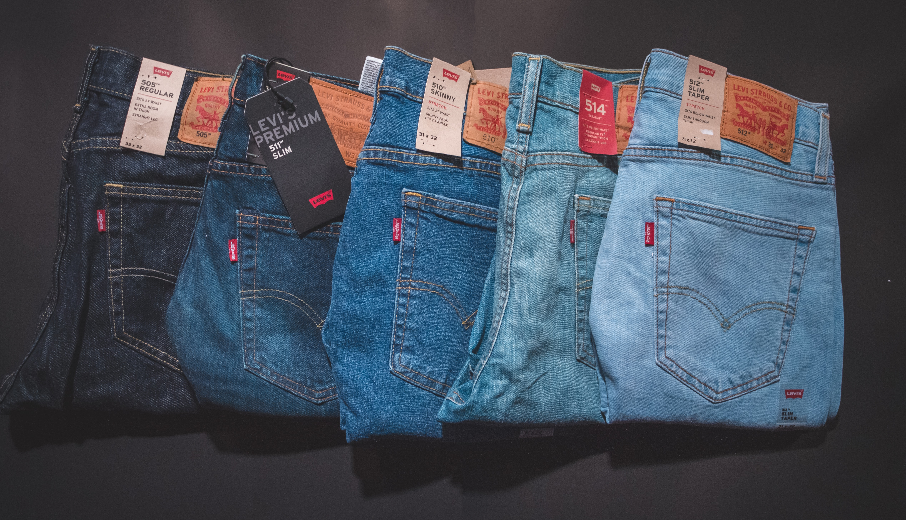

House Rocket insight
House Rocket is a fictititious company whose business model is purchase and sale of real estate. This is a insight project and the purpose was to find the best business opportunities in the real estate market and maximize the company's revenue.
Languages & Tools
- Libre Office.
- Python, Pandas, Numpy, Matplotlib and Seaborn.
- Anaconda and Jupyter Notebook.
- PyCharm.
- Git and GitHub.
- Streamlit and Heroku Cloud.
House Rocket Machine Learning
House Rocket's CEO asked for a Machine Learning model to make better decisions in their real estate business model. The purpose was to determine the best business opportunities in the real estate market and maximize the company's revenue using Machine Learning modeling.
Languages & Tools
- Libre Office.
- Python, Pandas, Numpy, Seaborn, Plotly, Matplotlib, SciPy, Sklearn, Tqdm and Dateutil.
- GitHub.
- Google Colab.

Star Jeans
Star Jeans is a fictitious American enterprise whose business model is the sale of jeans by B2C ecommerce. Eduardo and Marcelo are Brazilian businessmen and decided to build a jeans company in the United States of America. The initial idea is the sale of jeans to men.
Languages & Tools
- Webscraping.
- Python, Pandas, Numpy, Seaborn, requests and BeautifulSoup.
- Google Colab.
- VSCode.
- Git and GitHub.

Artificial Neural Network (ANN) modeling
I used ANN to predict the acetic anhydride selectivity by the maximization of its yield and the minimization of steam residue. Using predictive modeling in this case is quite profitable because reduce feedstock waste and better manegement of the final product yield.
Languages & Tools
- Microsoft Excel.
- R, readxl and neuralnet.
- RStudio.
- GitHub.

Data Pipeline with Apache Airflow and Apache Spark
The process of extracting, transforming and loading data from twitter's API was automated by the creation of a data pipeline. The pipeline was created using Airflow and Spark. The extracted data was analyzed to the generation of insights.
Languages & Tools
- Libre Office
- Python, Pandas, Numpy and Matplotlib.
- Google Colab.
- PyCharm.
- Apache Airflow and Apache Spark.
- Git and GitHub.

Covid-19 Data Analysis
This is a data analysis project in order to explore COVID-19 world data using SQL with SQLite and DBeaver. We treated and explored the datasets to create a dashboard with Tableau and then deployed it online.
Languages & Tools
- DBeaver.
- SQLite.
- Excel.
- Tableau.
- Git and GitHub.